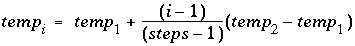
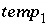

This keyword data block is used to define temperature during batch-reaction steps. It is necessary to enter this data block if a temperature other than the default temperature is needed for batch-reaction calculations. This data block can also be used to specify the temperature in a cell or range of cells during advective transport calculations ( ADVECTION) and the initial temperature for a cell or range of cells in advective-dispersive transport calculations ( TRANSPORT).
Line 0: REACTION_TEMPERATURE 1 Three explicit reaction temperatures. Line 1: 15.0 25.0 35.0
Line 0: REACTION_TEMPERATURE [ number ] [ description ]
REACTION_TEMPERATURE is the keyword for the data block.
number --Positive number to designate the following temperature data. A range of numbers may also be given in the form m-n , where m and n are positive integers, m is less than n , and the two numbers are separated by a hyphen without intervening spaces. Default is 1.
description --Optional comment that describes the temperature data.
list of temperatures --A list of temperatures, in Celsius, that will be applied to batch-reaction calculations. More lines may be used to supply additional temperatures. One batch-reaction calculation will be performed for each listed temperature.
Line 0: REACTION_TEMPERATURE 1 Three implicit reaction temperatures. Line 1: 15.0 35.0 in 3 steps
Line 0: REACTION_TEMPERATURE [ number ] [ description ]
Line 1: temp 1 , temp 2 , in steps
temp 1 --Temperature of first reaction step, in Celsius.
temp 2 --Temperature of final reaction step, in Celsius.
in steps --" in" indicates that the temperature will be calculated for each of steps number of steps. The temperature at each step, i , will be calculated by the formula
 ; if steps = 1, then the temperature of the batch
reaction will be  . Example data block 2 performs exactly the same calculations as example data block 1. If more batch-reaction steps are defined by REACTION or KINETICS input, the temperature of the additional steps will be temp 2 .
If more batch-reaction steps are defined in REACTION or KINETICS than temperature steps in REACTION_TEMPERATURE, then the final temperature will be used for all of the additional batch-reaction steps. INCREMENTAL_REACTIONS keyword has no effect on the REACTION_TEMPERATURE data block. The default temperature of a reaction step is equal to the temperature of the initial solution or the mixing-fraction-averaged temperature of a mixture. REACTION_TEMPERATURE input can be used even if there is no REACTION input. The method of calculation of temperature steps using " in" is slightly different than that for reaction steps. If n temperature steps are defined with " in n " in a REACTION_TEMPERATURE data block, then the temperature of the first reaction step is equal to temp 1 ; temperatures in the remaining steps changes in n-1 equal increments. If n reaction steps are defined with " in n " in a REACTION data block, then the reaction is added in n equal increments.
In an advective transport calculation ( ADVECTION), if REACTION_TEMPERATURE n is defined (or a range is defined n - m ), and n is less than or equal to the number of cells in the simulation, then the first temperature in the data block of REACTION_TEMPERATURE n is used as the temperature in cell n (or cells n - m ) for all shifts in the advective transport calculation. In advective-dispersive transport simulations ( TRANSPORT), the initial equilibration also occurs at the first temperature of REACTION_TEMPERATURE n in cell n . However, depending on the setting of temperature_retardation_factor, an exchange of heat may take place that will cause the temperature of the cell to change as the advective-dispersive transport calculation progresses.
The keyword REACTION_TEMPERATURE is used in example problem 2.